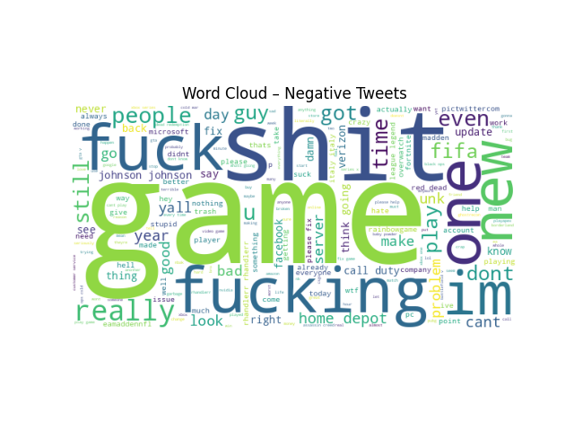
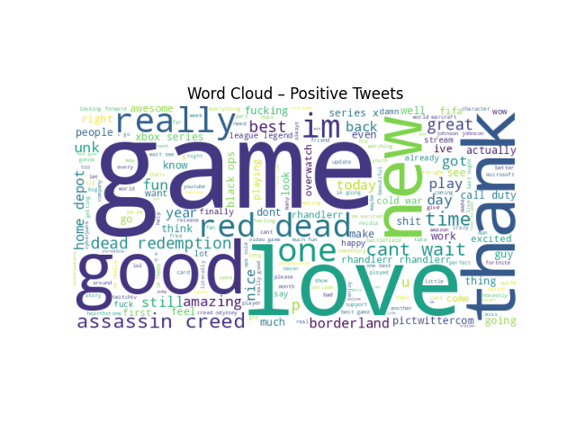
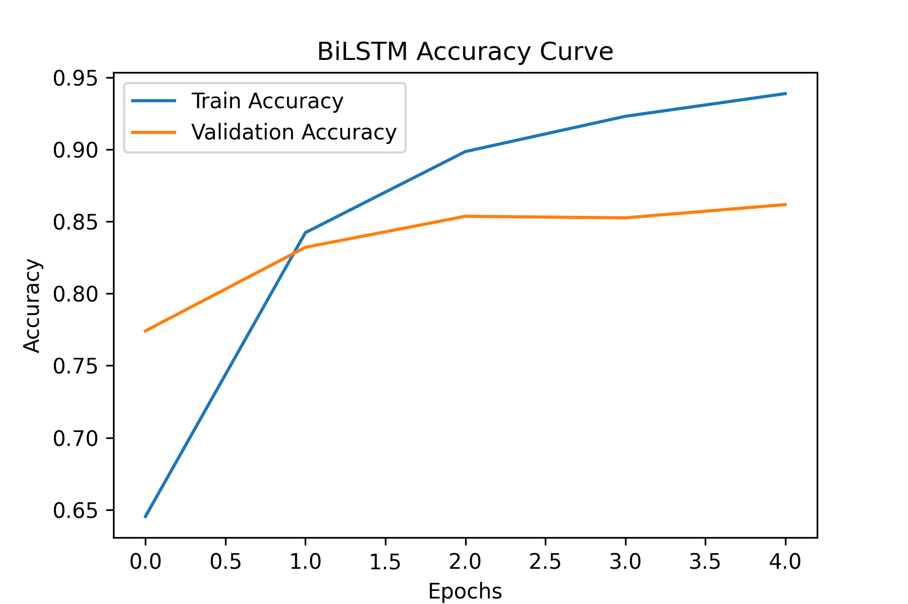
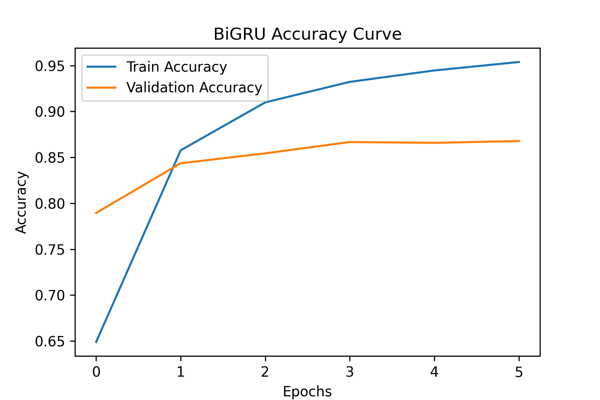
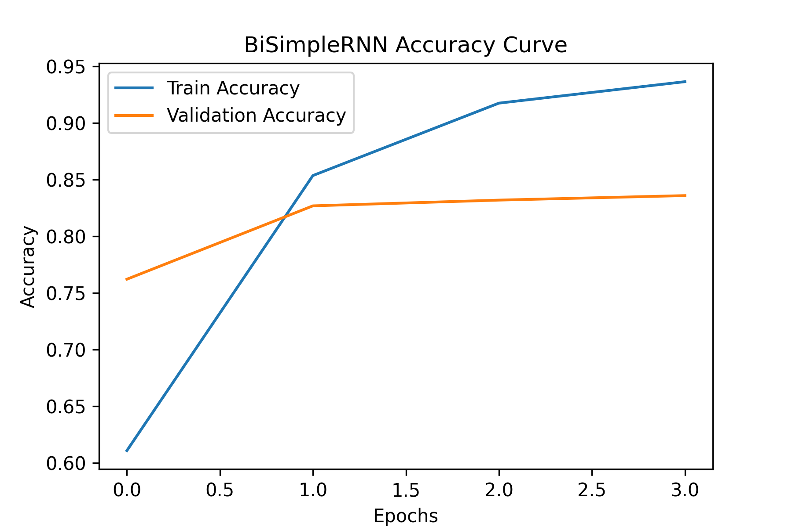
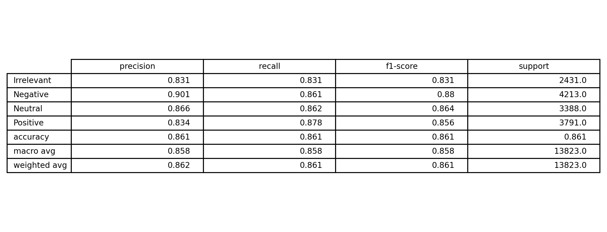
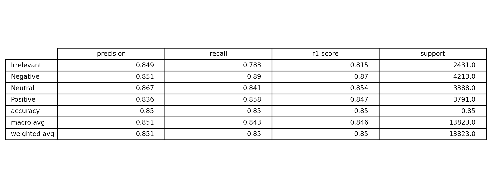

This page summarizes how the sentiment classifier was built: data preparation, embedding strategy, training setup, model variants (baseline vs GRU vs LSTM), and the visuals used to validate results. Code is intentionally shown only as small snippets (no full notebook dump).
Task
Sentiment classification (positive vs negative vs neutral vs irrelevant )
Input
Tokenized text sequences with padding/truncation
Output
Probability score + class label
Text was cleaned and standardized before training. The objective was to reduce noise without losing meaning (especially around negations like “not good”).
# Tokenization + padding (snippet)
tokenizer = Tokenizer(num_words=VOCAB_SIZE, oov_token="<OOV>")
tokenizer.fit_on_texts(train_texts)
X_train = pad_sequences(tokenizer.texts_to_sequences(train_texts),
maxlen=MAX_LEN, padding="post", truncating="post")
X_val = pad_sequences(tokenizer.texts_to_sequences(val_texts),
maxlen=MAX_LEN, padding="post", truncating="post")Visual checks used


The embedding layer converts word IDs into dense vectors so the model can learn semantic relationships. We used trainable embeddings as the default approach.
# Embedding layer (snippet)
model = Sequential([
Embedding(input_dim=VOCAB_SIZE, output_dim=EMBED_DIM, input_length=MAX_LEN),
...Optional upgrade: use pre-trained embeddings (e.g., GloVe) to improve generalization on small datasets.
Baseline vs Sequence Models
# Baseline (snippet)
Embedding(...)
GlobalAveragePooling1D()
Dense(4, activation="sigmoid")The main comparison was whether sequence-aware units (RNN/GRU/LSTM) improved over an embedding-only baseline. GRU/LSTM typically help when longer dependencies matter and gradients need more stability.
SimpleRNN
Good for fundamentals + quick tests; limited for long context.
Embedding(...)
SimpleRNN(UNITS)
Dense(4, "sigmoid")GRU
Fewer gates than LSTM; often faster with strong performance.
Embedding(...)
GRU(UNITS)
Dense(4, "sigmoid")LSTM
Strong for longer sequences; more parameters / compute.
Embedding(...)
LSTM(UNITS)
Dense(4, "sigmoid")Training used a standard binary classification setup.
# Compile + train (snippet)
model.compile(optimizer="adam",
loss="binary_crossentropy",
metrics=["accuracy"])
history = model.fit(X_train, y_train,
validation_data=(X_val, y_val),
epochs=EPOCHS,
batch_size=BATCH_SIZE)Training curves



Evaluation focused on both metrics and error patterns (examples that break the model).
y_pred = np.argmax(model_gru.predict(X_test), axis=1)
y_true = np.argmax(y_test, axis=1)
print(classification_report(y_true, y_pred_gru, target_names=le.classes_))
